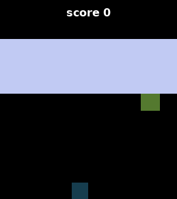
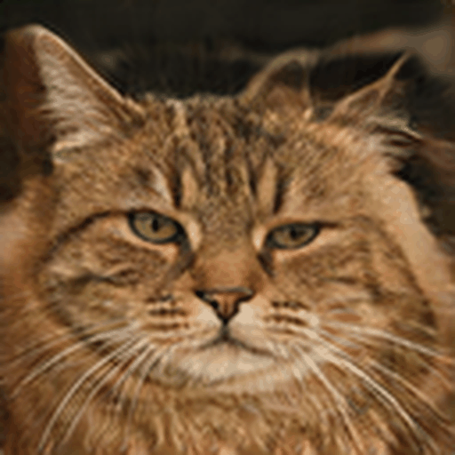

I am an undergraduate researcher in Computer Science focused on machine intelligence. My work centers on world models and representation learning.
I study how autonomous agents build internal models of their environments to plan and act. My goal is to understand intelligence from first principles, exploring the scalable learning dynamics that allow systems to generalize and discover complex behavior.

DreamerV3 from Scratch in Pure JAX
A from-scratch implementation of DreamerV3 (Hafner et al., Nature 2025) sized to the 50M parameter configuration. Solves stability challenges in model-based reinforcement learning by decoupling gradient scale from environment rewards via 255-bin symlog two-hot distributions, preventing categorical collapse with unimix policy regularization, and eliminating causal action leakage in the RSSM. Reaches a 14.76 mean return on MinAtar Breakout in 300,000 environment steps, matching distributional DQN baselines at a fraction of sample complexity. Investigated recurrent state decay across imagined rollouts, exploring gate initialization offsets to improve temporal retention.

sg3x (Alias-Free GAN from the Paper Up)
A complete from-paper implementation of StyleGAN3-T in JAX, Flax NNX, and Optax, addressing the alias-free continuous signal representation problem. Eliminates internal texture sticking by wrapping synthesis layers in an upsample, filter, activate, filter, downsample pipeline with custom Kaiser sinc lowpass filters computed analytically per layer. Shows that without Adaptive Discriminator Augmentation (ADA), the discriminator memorizes small image distributions within 1,000 steps, starving generator gradients. Trained on 2,000 AFHQv2 cat images on a TPU v5e-8 for 46,000 steps with bfloat16 mixed precision, maintaining training stability without mode collapse.

vitrax (Vision Transformer from First Principles)
An implementation of the Vision Transformer built exclusively with jax.numpy, bypassing automatic differentiation to code the backward pass through multi-head self-attention, layer normalization, and linear projections entirely by hand. Every analytical gradient was numerically verified against finite differences to 1e-11 precision. Evaluates sample efficiency and the lack of spatial inductive bias in pure self-attention on Tiny ImageNet across 200 classes without pre-trained checkpoints.

derivax (Sequence-to-Sequence for Symbolic Calculus)
An encoder-decoder Transformer built in jax.numpy to investigate symbolic rule induction in autoregressive sequence models. Formulating polynomial calculus as character-level sequence-to-sequence translation, the model achieves 100% accuracy on linear polynomials and 70.3% on quadratic expressions over 100,000 pairs. Error analysis shows that attention heads learn symbolic differentiation rules cleanly, while errors on higher-degree polynomials stem from multi-digit character arithmetic under autoregressive generation.
Mentored final-year students on machine learning fundamentals and transformers, advising on model architectures, training dynamics, and empirical evaluation for their degree theses.
Appointed by cohort peers to design and lead the machine learning curriculum for coursemates, delivering hands-on lectures on optimization, deep learning foundations, and modern implementations.
Co-led the machine learning and artificial intelligence curriculum for club members, delivering technical workshops including sessions on AI ethics and responsible deployment.